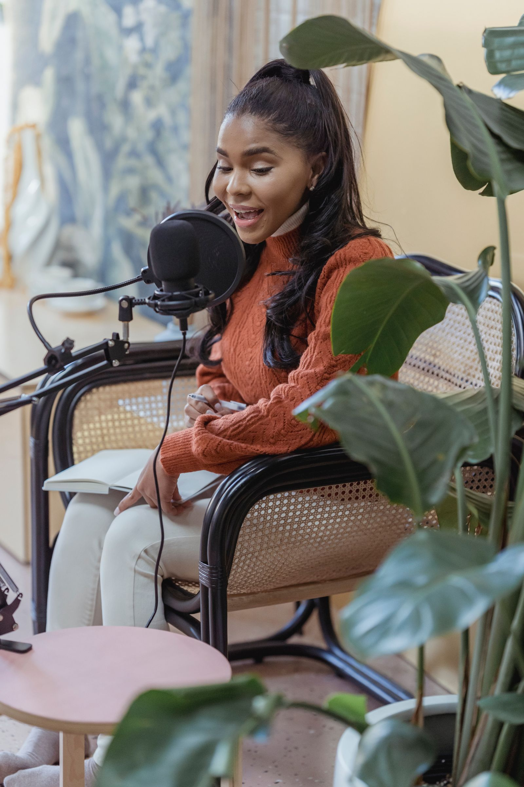
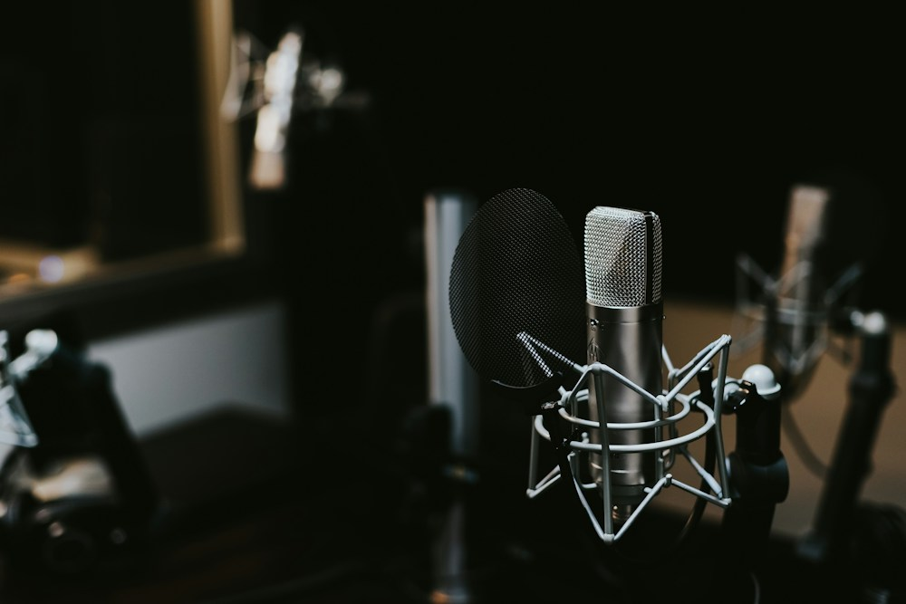

Aprovecha lo que ya grabaste
Transforma videos largos en fragmentos que puedas compartir por separado.
DRIX CLIP convierte tus videos largos en clips para Reels, TikTok y Shorts. Encuentra tus momentos, añade subtítulos y comparte tu contenido con un nuevo formato.
Empieza con el plan Gratis. Sin tarjeta.

Podcasts / Entrevistas / Tutoriales / Ideas que merecen verse
Tres pasos para aprovechar
lo que ya grabaste.

Una conversación, una explicación o una buena idea pueden dar para más de una publicación.
Empieza a crearTransforma videos largos en fragmentos que puedas compartir por separado.
Añade subtítulos o elige publicar sin ellos. Tú decides cómo contar cada momento.
Vertical, cuadrado u horizontal. Prepara tu contenido para el espacio donde lo vas a compartir.
Convierte tus videos largos en clips verticales que dan ganas de ver. Con subtítulos, con tu estilo y listos para compartir.
Elige un momento, dale tu estilo
y llévalo a tus redes.
Hasta 3 clips por video con tu plan.
Los subtítulos se crean a partir de la voz de tu video.
Tus clips se guardan automáticamente y se eliminan después de 24 horas.
Cargando tus creaciones…
Un plan gratis para empezar.
Más posibilidades cuando las necesites.
Cargando planes…
Lo que necesitas saber para empezar.
Sí. El plan Gratis incluye 30 minutos de video al día y hasta 3 clips por video, en 720p con marca de agua. Accede con tu cuenta de Google para empezar.
Archivos MP4, MOV o WEBM. Los videos con voz clara, como podcasts, entrevistas y tutoriales, permiten obtener mejores transcripciones.
Tus creaciones estarán disponibles durante 24 horas. Descarga tus clips para conservarlos y compartirlos cuando quieras.
Sí. Puedes cancelar tu suscripción desde los pagos automáticos de tu cuenta de PayPal.
Accede con tu cuenta de Google, sube tu video y elige el formato, la duración y la cantidad de clips. Después encontrarás tus resultados en Mis creaciones.